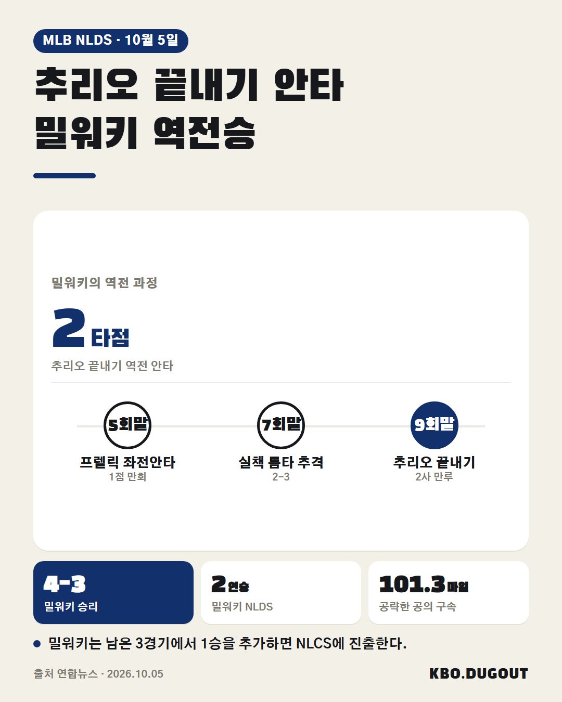
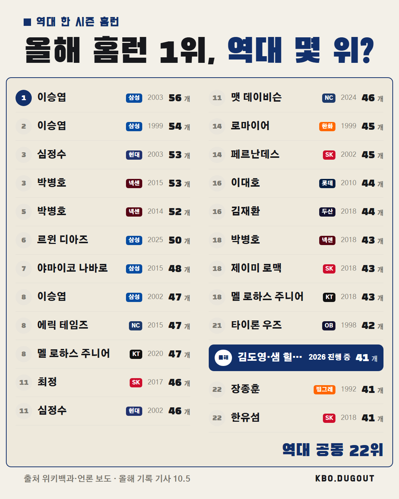

밀워키가 NLDS 2연승으로 NLCS까지 1승 남았습니다. 3차전은 어느 팀이 가져갈 것 같으세요?
QA 없음
밀워키가 NLDS 2연승으로 NLCS까지 1승 남았습니다. 3차전은 어느 팀이 가져갈 것 같으세요?
QA 없음

밀워키가 9회말 2사 만루에서 잭슨 추리오의 끝내기 역전 안타로 샌디에이고를 4-3으로 꺾었습니다. 마무리 메이슨 밀러의 시속 101.3마일(약 163㎞) 공을 받아친 한 방이었어요. 이 한 방 덕에 밀워키는 NLDS 2연승을 달렸는데, 시리즈 분수령은 어느 팀이 될까요? #MLB #메이저리그 #야구 #잭슨추리오 #밀워키브루어스
QA 너무 김
밀워키 추리오 끝내기 안타, 밀워키 역대 3번째 가을야구 끝내기 승리. NLDS 2승 무패.
QA 없음

현재 타점 1위 힐리어드, 신기록까지 24타점. 신기록 깰 수 있을까? 출처: 위키백과 (위키백과 CC BY-SA) · 올해 기록 운영자 입력
QA 없음

현재 홈런 1위 김도영·샘 힐리어드, 41개로 역대 공동 22위. 역대 몇 위까지 갈 수 있을까? 출처: 위키백과·언론 보도 (위키백과 CC BY-SA) · 올해 기록 기사 10.5
QA 없음